主帖标题: 年卦：2021年上证指数走势如何？
1.4日再次测年卦：
性别：男 占事:2021年上证指数走势如何？
起卦方式：铜钱手动摇卦 (周易世界 www.zhouyiworld.com)
时间: 2021-01-04 7时57分
干支: 庚子年戊子月壬子日 (旬空: 寅卯 )
山火贲 风火家人
六神 伏神 本 卦 变 卦
白虎 ▅▅▅▅▅ 官鬼寅木 ▅▅▅▅▅ 官鬼卯木
腾蛇 ▅▅ ▅▅ 妻财子水 Ｘ→ ▅▅▅▅▅ 父母巳火 应
勾陈 ▅▅ ▅▅ 兄弟戌土 应 ▅▅ ▅▅ 兄弟未土
朱雀 子孙申金▅▅▅▅▅ 妻财亥水 ▅▅▅▅▅ 妻财亥水
青龙 父母午火▅▅ ▅▅ 兄弟丑土 ▅▅ ▅▅ 兄弟丑土 世
玄武 ▅▅▅▅▅ 官鬼卯木 世 ▅▅▅▅▅ 官鬼卯木
两卦。
年卦：2021年上证指数走势如何？
出生年份：2020年 性别：男
占事:年卦：2021年上证阳历月份指数走势如何？
起卦方式：铜钱手动摇卦 (周易世界 www.zhouyiworld.com)
公历时间：2020年12月31日13时10分 农历时间：庚子年 十一月十七日未时
干 支：庚子年 戊子月 戊申日 己未时
旬 空：辰巳 午未 寅卯 子丑
神 煞：驿马─寅 桃花─酉 日禄─巳 贵人─丑，未
巽宫：天雷无妄（六冲）
六神 【本 卦】
朱雀 ▄▄▄▄▄ 妻财壬戌土
青龙 ▄▄▄▄▄ 官鬼壬申金
玄武 ▄▄▄▄▄ 子孙壬午火 世
白虎 ▄▄ ▄▄ 妻财庚辰土
螣蛇 ▄▄ ▄▄ 兄弟庚寅木
勾陈 ▄▄▄▄▄ 父母庚子水 应
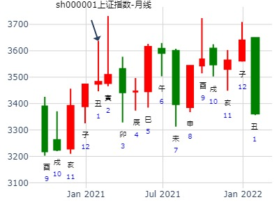
测试-娱乐用-程序HTML转换调试用
时间: 2099-01-01
干支: 戊午年甲子月戊戌日 (旬空: 辰巳 )
山火贲 风火家人
六神 伏神 本 卦 变 卦
朱雀 ▅▅▅▅▅ 官鬼寅木 ▅▅▅▅▅ 官鬼卯木
青龙 ▅▅ ▅▅ 妻财子水 Ｘ→ ▅▅▅▅▅ 父母巳火 应
玄武 ▅▅ ▅▅ 兄弟戌土 应 ▅▅ ▅▅ 兄弟未土
白虎 子孙申金▅▅▅▅▅ 妻财亥水 ▅▅▅▅▅ 妻财亥水
腾蛇 父母午火▅▅ ▅▅ 兄弟丑土 ▅▅ ▅▅ 兄弟丑土 世
勾陈 ▅▅▅▅▅ 官鬼卯木 世 ▅▅▅▅▅ 官鬼卯木
亨。 小利有所往。
初九：贲其趾，舍车而徒。
六二：贲其须。
九三：贲如濡如，永贞吉。
六四：贲如皤如，白马翰如，匪寇婚媾。
六五：贲于丘园，束帛戋戋，吝，终吉。
上九：白贲，无咎。
彖︰贲，亨；柔来而文刚，故亨。分刚上而文柔，故小利有攸往。天文也；文明以止，人文也。观乎天文，以察时变；观乎人文，以化成天下。
主帖标题: 手摇沪指2 14
癸卯 甲寅 壬寅 戊申 (辰巳空) 癸卯年腊月廿五(2023/02/13 15:25:56)
山火贲 风火家人
白虎 官鬼寅木 ／ 官鬼卯木 ／
腾蛇 妻财子水 × 父母巳火 ／ 应
勾陈 兄弟丙戌 ∥ 应 兄弟辛未 ∥
子孙申金：朱雀 妻财亥水 ／ 妻财亥水 ／
父母午火：青龙 兄弟丑土 ∥ 兄弟丑土 ∥ 世
玄武 官鬼卯木 ／ 世 官鬼卯木 ／
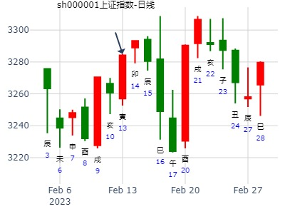
主帖标题: [原创]10只股票6个月预测
占事：0882 天津发展
起卦方式：手动摇卦 www.iqing.net 线上排盘系统
公历时间：2006年4月12日0时4分 星期三
农历时间：丙戌年三月十五子时
干支：丙戌年 壬辰月 辛未日 戊子时 (旬空：戌亥)
神煞：驿马—巳 桃花—子 日禄—酉 贵人—寅，午
艮宫：山火贲 巽宫：风火家人
六神 伏 神 【本 卦】 【变 卦】
螣蛇 ▅▅▅▅▅ 官鬼丙寅木 ▅▅▅▅▅ 官鬼辛卯木
勾陈 ▅▅ ▅▅ 妻财丙子水 ×→ ▅▅▅▅▅ 父母辛巳火 应
朱雀 ▅▅ ▅▅ 兄弟丙戌土 应 ▅▅ ▅▅ 兄弟辛未土
青龙 子孙丙申金 ▅▅▅▅▅ 妻财己亥水 ▅▅▅▅▅ 妻财己亥水
玄武 父母丙午火 ▅▅ ▅▅ 兄弟己丑土 ▅▅ ▅▅ 兄弟己丑土 世
白虎 ▅▅▅▅▅ 官鬼己卯木 世 ▅▅▅▅▅ 官鬼己卯木 强弩之末，不沾。
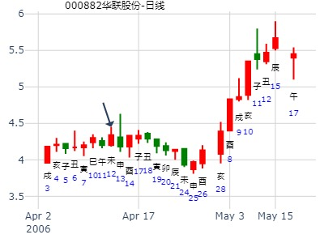
贲之家人，财化父，化绝，先冲高，后暴跌。
大黑山测沪市大盘(4月22日)之行情涨跌，得：
起卦方式：收盘指数报数起卦 (15,11) 动爻加时辰
公历时间：2009年4月21日15时3分
干支：己丑年 戊辰月 丙申日 丙申时 旬空：午未 戌亥 辰巳 辰巳
艮宫：山火贲 巽宫：风火家人
六神 伏 神 【本 卦】 【变 卦】
青龙 ▄▄▄▄▄ 官鬼丙寅木 ▄▄▄▄▄ 官鬼辛卯木
玄武 ▄▄ ▄▄ 妻财丙子水 X-> ▄▄▄▄▄ 父母辛巳火 应
白虎 ▄▄ ▄▄ 兄弟丙戌土 应 ▄▄ ▄▄ 兄弟辛未土
螣蛇 子孙丙申金 ▄▄▄▄▄ 妻财己亥水 ▄▄▄▄▄ 妻财己亥水
勾陈 父母丙午火 ▄▄ ▄▄ 兄弟己丑土 ▄▄ ▄▄ 兄弟己丑土 世
朱雀 ▄▄▄▄▄ 官鬼己卯木 世 ▄▄▄▄▄ 官鬼己卯木
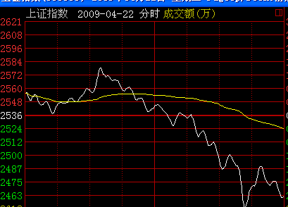
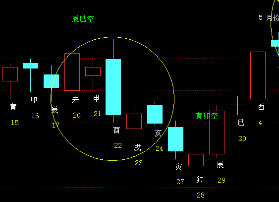
马后炮：
贲为诱多。
22日酉日大跌。
财化绝为主象
男 占事: 6月12日上证指数的涨跌？
起卦方式：报数起卦 (95,123) 动爻加时辰 龙隐网([url]www.longyin.net)[/url]六爻线上排盘系统
公历时间：2009年6月11日15时18分
干支：己丑年 庚午月 丁亥日 戊申时
旬空：午未 戌亥 午未 寅卯
艮宫：山火贲 巽宫：风火家人
六神 伏 神 【本 卦】 【变 卦】
青龙 ▄▄▄▄▄ 官鬼丙寅木 ▄▄▄▄▄ 官鬼辛卯木
玄武 ▄▄ ▄▄ 妻财丙子水 X-> ▄▄▄▄▄ 父母辛巳火 应
白虎 ▄▄ ▄▄ 兄弟丙戌土 应 ▄▄ ▄▄ 兄弟辛未土
螣蛇 子孙丙申金 ▄▄▄▄▄ 妻财己亥水 ▄▄▄▄▄ 妻财己亥水
勾陈 父母丙午火 ▄▄ ▄▄ 兄弟己丑土 ▄▄ ▄▄ 兄弟己丑土 世
朱雀 ▄▄▄▄▄ 官鬼己卯木 世 ▄▄▄▄▄ 官鬼己卯木
财化绝，大跌。
月破之子水妻财正好为子日化绝。
王注：子冲旬空午火冲实。
贲之家人，大跌。财化绝，财化父，子化巳；日卦。（龙隐卦例）
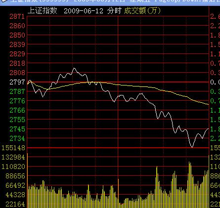
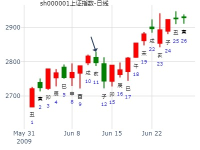
本帖最后由 senxu 于 2010-7-13 16:42 编辑
占事：7.14盘走势
公历起卦时间：2010年7月13日15时26分 (手工指定)
干支：庚寅年 癸未月 甲子日 壬申时 （日空：戌亥）
艮宫：山火贲 (六合) 巽宫：风火家人
六神 伏神 本 卦 变 卦
玄武 官鬼丙寅木 ▅▅▅▅▅ 官鬼辛卯木 ▅▅▅▅▅
白虎 妻财丙子水 ▅▅ ▅▅ ╳→ 父母辛巳火 ▅▅▅▅▅ 应
腾蛇 兄弟丙戌土 ▅▅ ▅▅ 应 兄弟辛未土 ▅▅ ▅▅
勾陈 子孙丙申金 妻财己亥水 ▅▅▅▅▅ 妻财己亥水 ▅▅▅▅▅
朱雀 父母丙午火 兄弟己丑土 ▅▅ ▅▅ 兄弟己丑土 ▅▅ ▅▅ 世
青龙 官鬼己卯木 ▅▅▅▅▅ 世 官鬼己卯木 ▅▅▅▅▅
贲之家人，财化父，子化巳。财化绝。
因次日为丑，合住子水，暂且不化绝，但寅日就要大跌了。
贲，又是财化父，解释日卦则容易是冲高回落。
又是白虎临用神。
因为子日，收盘仍是红。
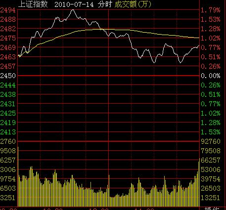
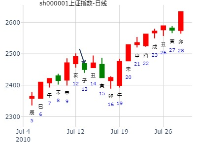
主题：7月28日-8月1日黄金的走势 1305
甲午 辛未 庚子 辛巳 (辰巳空) 甲午年七月初二(2014/07/28 09:01:48)
山火贲 风火家人
腾蛇 官鬼戊寅 ／ 官鬼己卯 ／
勾陈 妻财丙子 × 父母辛巳 ／ 应
朱雀 兄弟丙戌 ∥ 应 兄弟癸未 ∥
子孙甲申：青龙 妻财丁亥 ／ 妻财丁亥 ／
父母壬午：玄武 兄弟丁丑 ∥ 兄弟丁丑 ∥ 巽
白虎 官鬼己卯 ／ 艮 官鬼己卯 ／
子丑寅卯辰
出生年：年 性别：男
占事: 测上证8.12收盘日走势？8.11
起卦方式：手动摇卦 周易天地www.64gua.com六爻线上排盘系统
公历时间：2011年8月11日7时15分
干支：辛卯年 丙申月 戊戌日 丙辰时
旬空：午未 辰巳 辰巳 子丑
神煞：驿马─申 桃花─卯 日禄─巳 贵人─丑，未
艮宫：山火贲 巽宫：风火家人
六神 伏 神 【本 卦】 【变 卦】
朱雀 ▄▄▄▄▄ 官鬼丙寅木 ▄▄▄▄▄ 官鬼辛卯木
青龙 ▄▄ ▄▄ 妻财丙子水 X-> ▄▄▄▄▄ 父母辛巳火 应
玄武 ▄▄ ▄▄ 兄弟丙戌土 应 ▄▄ ▄▄ 兄弟辛未土
白虎 子孙丙申金 ▄▄▄▄▄ 妻财己亥水 ▄▄▄▄▄ 妻财己亥水
螣蛇 父母丙午火 ▄▄ ▄▄ 兄弟己丑土 ▄▄ ▄▄ 兄弟己丑土 世
勾陈 ▄▄▄▄▄ 官鬼己卯木 世 ▄▄▄▄▄ 官鬼己卯木
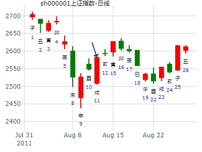
占事：8月大盘。教授
时间: 2022-08-07 20：35
干支: 壬寅年戊申月壬辰日 (旬空: 午未 )
山火贲 风火家人
六神 伏神 本 卦 变 卦
白虎 ▅▅▅▅▅ 官鬼寅木 ▅▅▅▅▅ 官鬼卯木
腾蛇 ▅▅ ▅▅ 妻财子水 Ｘ→ ▅▅▅▅▅ 父母巳火 应
勾陈 ▅▅ ▅▅ 兄弟戌土 应 ▅▅ ▅▅ 兄弟未土
朱雀 子孙申金▅▅▅▅▅ 妻财亥水 ▅▅▅▅▅ 妻财亥水
青龙 父母午火▅▅ ▅▅ 兄弟丑土 ▅▅ ▅▅ 兄弟丑土 世
玄武 ▅▅▅▅▅ 官鬼卯木 世 ▅▅▅▅▅ 官鬼卯木
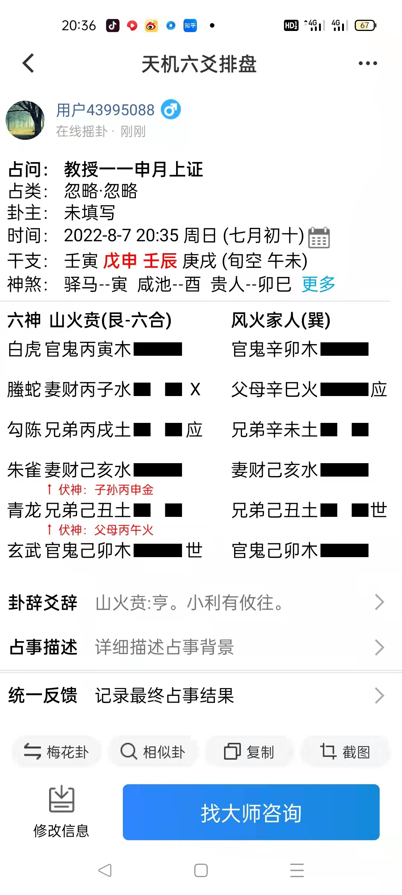
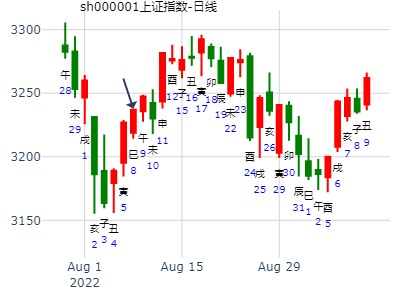
主帖标题: 600077卦测
公历起卦时间：2019年10月24日22时34分 (按农历时间起卦)
干支：己亥年 甲戌月 甲午日 乙亥时 （日空：辰巳）
神煞：驿马－申 桃花－卯 日禄－寅 贵人－丑，未
艮宫：山火贲 (六合) 巽宫：风火家人
六神 伏神 本 卦 变 卦
玄武 官鬼丙寅木 ▅▅▅▅▅ 官鬼辛卯木 ▅▅▅▅▅
白虎 妻财丙子水 ▅▅ ▅▅ ╳→ 父母辛巳火 ▅▅▅▅▅ 应
腾蛇 兄弟丙戌土 ▅▅ ▅▅ 应 兄弟辛未土 ▅▅ ▅▅
勾陈 子孙丙申金 妻财己亥水 ▅▅▅▅▅ 妻财己亥水 ▅▅▅▅▅
朱雀 父母丙午火 兄弟己丑土 ▅▅ ▅▅ 兄弟己丑土 ▅▅ ▅▅ 世
青龙 官鬼己卯木 ▅▅▅▅▅ 世 官鬼己卯木 ▅▅▅▅▅
六五：贲于丘园，束帛戋戋，吝，终吉。象曰：六五之吉，有喜也。
五行：未日冲丑合子动弹不得，不利，下周一财动化空，戌日克财不利，亥日子日有涨之象。
若论策略，应在下周一尾盘或周二早盘建仓，周三子日清大部分仓位，周四丑日清光最后一点。
本文所测，不作为投资建议，盈亏自负
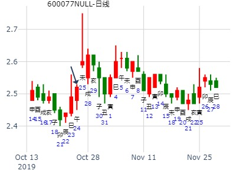
时间: 2024-10-21 王
干支: 甲辰年甲戌月戊午日 (旬空: 子丑 )
山火贲 风火家人
六神 伏神 本 卦 变 卦
朱雀 ▅▅▅▅▅ 官鬼寅木 ▅▅▅▅▅ 官鬼卯木
青龙 ▅▅ ▅▅ 妻财子水 Ｘ→ ▅▅▅▅▅ 父母巳火 应
玄武 ▅▅ ▅▅ 兄弟戌土 应 ▅▅ ▅▅ 兄弟未土
白虎 子孙申金▅▅▅▅▅ 妻财亥水 ▅▅▅▅▅ 妻财亥水
腾蛇 父母午火▅▅ ▅▅ 兄弟丑土 ▅▅ ▅▅ 兄弟丑土 世
勾陈 ▅▅▅▅▅ 官鬼卯木 世 ▅▅▅▅▅ 官鬼卯木
六五：贲于丘园，束帛戋戋，吝，终吉。
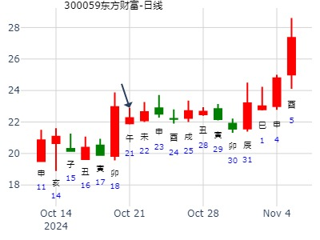
男
占事: 600162 下周
起卦方式：手动摇卦
公历时间：2014年11月30日12时44分
干支：甲午年 乙亥月 乙巳日 壬午时
旬空：辰巳 申酉 寅卯 申酉
艮宫：山火贲 巽宫：风火家人
六神 伏 神 【本 卦】 【变 卦】
玄武 ▄▄▄▄▄ 官鬼丙寅木 ▄▄▄▄▄ 官鬼辛卯木
白虎 ▄▄ ▄▄ 妻财丙子水 X-> ▄▄▄▄▄ 父母辛巳火 应
螣蛇 ▄▄ ▄▄ 兄弟丙戌土 应 ▄▄ ▄▄ 兄弟辛未土
勾陈 子孙丙申金 ▄▄▄▄▄ 妻财己亥水 ▄▄▄▄▄ 妻财己亥水
朱雀 父母丙午火 ▄▄ ▄▄ 兄弟己丑土 ▄▄ ▄▄ 兄弟己丑土 世
青龙 ▄▄▄▄▄ 官鬼己卯木 世 ▄▄▄▄▄ 官鬼己卯木
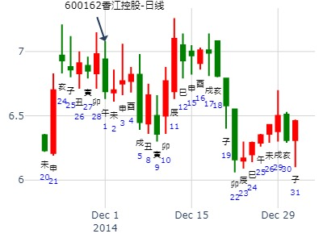
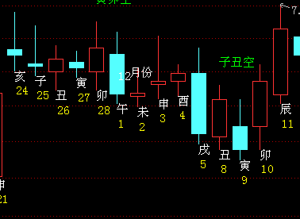
求测人：求测者，男，庚申(1980年)，时间起卦(起卦方式)
占问事宜：sc2201下周走势 (卜易居六爻排盘 http://pp.buyiju.com/liuyao/)
公历：2021年11月7日10时37分，星期日。
农历：辛丑年 十月 初三日 巳时。
神煞：驿马-巳 桃花-子 干禄-午 贵人-子、申
干支：辛丑年 戊戌月 己未日 己巳时 (卦身：午)
主变卦 山火贲(艮宫) 之 风火家人(巽宫) [空亡:子、丑]
勾陈 ▅▅▅▅▅ 官鬼丙寅木 ▅▅▅▅▅ 官鬼辛卯木
朱雀 ▅▅ ▅▅×妻财丙子水 ▅▅▅▅▅ 父母辛巳火 应
青龙 ▅▅ ▅▅ 兄弟丙戌土 应 ▅▅ ▅▅ 兄弟辛未土
玄武 子孙丙申金 ▅▅▅▅▅ 妻财己亥水 ▅▅▅▅▅ 妻财己亥水
白虎 父母丙午火 ▅▅ ▅▅ 兄弟己丑土 ▅▅ ▅▅ 兄弟己丑土 世
螣蛇 ▅▅▅▅▅ 官鬼己卯木 世 ▅▅▅▅▅ 官鬼己卯木
求测人：求测者，男，庚申(1980年)，时间起卦(起卦方式)
占问事宜：玻璃2205本周走势 (卜易居六爻排盘 http://pp.buyiju.com/liuyao/)
公历：2021年11月15日8时37分，星期一。
农历：辛丑年 十月 十一日 辰时。
神煞：驿马-巳 桃花-子 干禄-午 贵人-亥、酉
干支：辛丑年 己亥月 丁卯日 甲辰时 (卦身：午)
主变卦 山火贲(艮宫) 之 风火家人(巽宫) [空亡:戌、亥]
青龙 ▅▅▅▅▅ 官鬼丙寅木 ▅▅▅▅▅ 官鬼辛卯木
玄武 ▅▅ ▅▅×妻财丙子水 ▅▅▅▅▅ 父母辛巳火 应
白虎 ▅▅ ▅▅ 兄弟丙戌土 应 ▅▅ ▅▅ 兄弟辛未土
螣蛇 子孙丙申金 ▅▅▅▅▅ 妻财己亥水 ▅▅▅▅▅ 妻财己亥水
勾陈 父母丙午火 ▅▅ ▅▅ 兄弟己丑土 ▅▅ ▅▅ 兄弟己丑土 世
朱雀 ▅▅▅▅▅ 官鬼己卯木 世 ▅▅▅▅▅ 官鬼己卯木
主帖标题: T-Z-G上证指数擂台赛第三场第2局（2019年12月31日）Z方
Z 方
数理卦
公历起卦时间：2019年12月31日9时15分 (手工指定)
干支：己亥年 丙子月 壬寅日 乙巳时 （日空：辰巳）
神煞：驿马－申 桃花－卯 日禄－亥 贵人－卯，巳
艮宫：山火贲 (六合) 巽宫：风火家人
六神 伏神 本 卦 变 卦
白虎 官鬼丙寅木 ▅▅▅▅▅ 官鬼辛卯木 ▅▅▅▅▅
腾蛇 妻财丙子水 ▅▅ ▅▅ ╳→ 父母辛巳火 ▅▅▅▅▅ 应
勾陈 兄弟丙戌土 ▅▅ ▅▅ 应 兄弟辛未土 ▅▅ ▅▅
朱雀 子孙丙申金 妻财己亥水 ▅▅▅▅▅ 妻财己亥水 ▅▅▅▅▅
青龙 父母丙午火 兄弟己丑土 ▅▅ ▅▅ 兄弟己丑土 ▅▅ ▅▅ 世
玄武 官鬼己卯木 ▅▅▅▅▅ 世 官鬼己卯木 ▅▅▅▅▅
六五：贲于丘园，束帛戋戋，吝，终吉。象曰：六五之吉，有喜也。
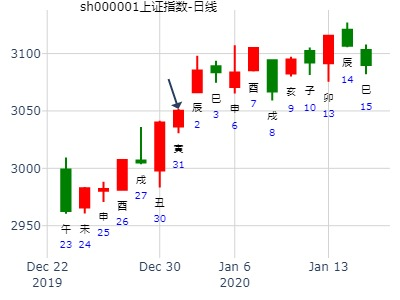
主帖标题: 2020.11.30---12.4上证涨跌（日测）
周三今天涨跌
公历时间：2020年12月2日8时53分 、
干 支：庚子年 丁亥月 己卯日 戊辰时
旬 空：辰巳 午未 申酉 戌亥
神 煞：驿马─巳 桃花─子 日禄─午 贵人─子，申
中国预测网纳甲六爻排盘
艮宫：山火贲 巽宫：风火家人
六神 伏 神 【本 卦】 【变 卦】
勾陈 ▄▄▄▄▄ 官鬼丙寅木 ▄▄▄▄▄ 官鬼辛卯木
朱雀 ▄▄ ▄▄ 妻财丙子水 × ▄▄▄▄▄ 父母辛巳火 应
青龙 ▄▄ ▄▄ 兄弟丙戌土 应 ▄▄ ▄▄ 兄弟辛未土
玄武 子孙丙申金 ▄▄▄▄▄ 妻财己亥水 ▄▄▄▄▄ 妻财己亥水
白虎 父母丙午火 ▄▄ ▄▄ 兄弟己丑土 ▄▄ ▄▄ 兄弟己丑土 世
螣蛇 ▄▄▄▄▄ 官鬼己卯木 世 ▄▄▄▄▄ 官鬼己卯木